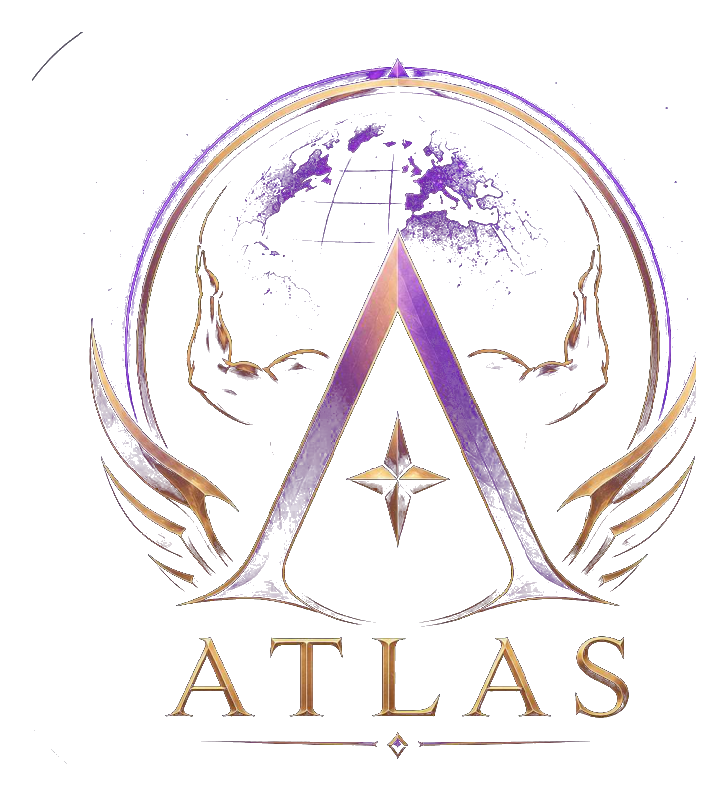
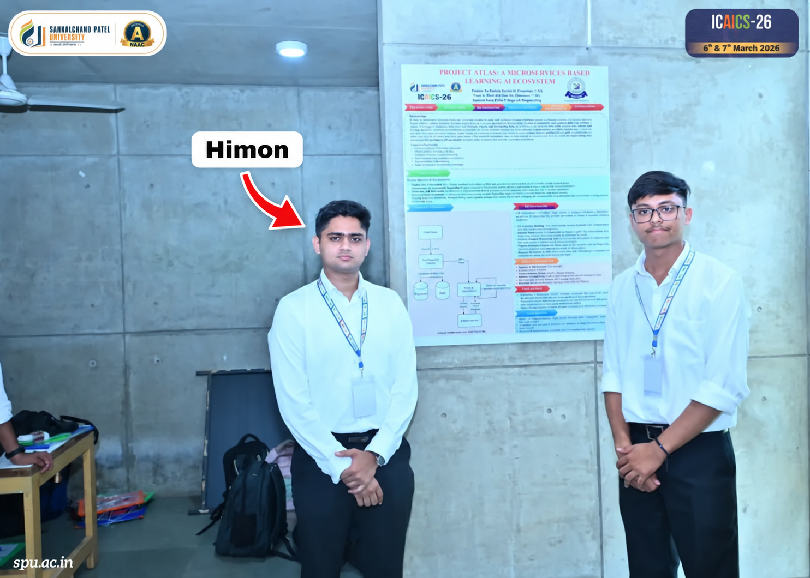

Early framing
The idea was easier to describe as “gamified learning,” but that phrase did not communicate the full product system.

A long-term exploration of learning, progression, student relationships and institutional participation around a persistent student identity.
ACTIVE EXPLORATION · PUBLIC CASE STUDY IS SANITIZEDAtlas began from questions about engagement in conventional education products and grew into a broader product-system exploration. It is intended as a layer that can complement institutions rather than replace them.
The public case study shows selected reasoning and research. Core mechanics, complete product architecture and some system interactions are intentionally not published.
I presented an early Project Atlas concept at ICAICS-26 in March 2026. The project was still much less developed, and the experience exposed a communication problem: the way I described “gamification” could be interpreted very differently from the active-learning, progression, collaboration and system-design ideas I actually meant.


The idea was easier to describe as “gamified learning,” but that phrase did not communicate the full product system.
If the audience cannot distinguish the problem, the mechanism and the wider system, the idea is not being explained clearly enough.
I now explain Atlas through persistent identity, active learning, progression, student relationships and institutional participation before discussing game mechanics.
I am not presenting the conference as an award or validation of Atlas. It is a visible checkpoint showing how the idea and the way I communicate it evolved.
A central Atlas question is whether a student's learning identity and continuity should persist when their institutional relationship changes. This led me to explore an architecture where the student remains the persistent entity while institutional relationships can change around them.
Institutional context and permissions.
Continuity beyond one institutional relationship.
A new institution does not automatically erase wider learning continuity.
Explore ways to make improvement visible without assuming rewards alone produce meaningful learning.
Treat competitive learning as a behavioural system whose effects need testing.
Explore whether helping other students can become part of learning and social identity.
Consider pacing and unhealthy over-engagement rather than optimizing for endless time spent.
These are product and behavioural hypotheses, not claims of proven psychological outcomes.
Atlas explores how progression, competition, collaboration, adaptive guidance and social learning could work together around a student's longer-term journey.
A conceptual AI-assisted roadmap could eventually use curriculum requirements, mastery, weaknesses, goals and pace as inputs.
The idea is structured school-level learning connection: exposure to different explanations and approaches while staying anchored to local educational context.
I can continue research, documentation, bounded prototypes and product decisions independently. The larger Atlas system eventually requires stronger engineering, design, education and institutional participation than I can provide alone.
Interfaces, isolated mechanics, bounded learning interactions, onboarding and technical architecture.
Institutional adoption, persistent identity across institutions, behaviour over time and ecosystem effects.
Independent research, product architecture, market exploration, system design and component-level concept development.